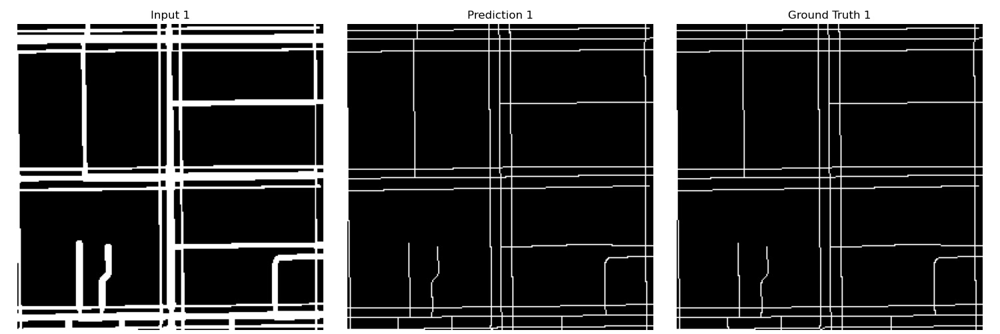
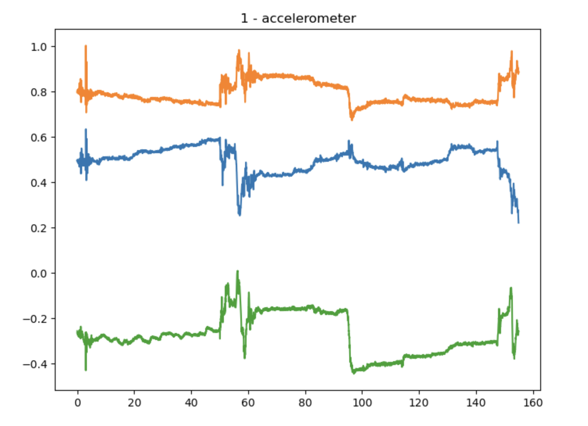
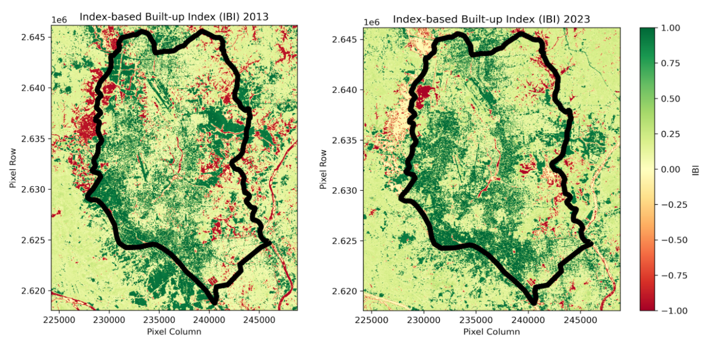
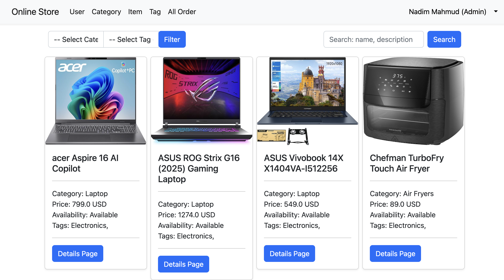
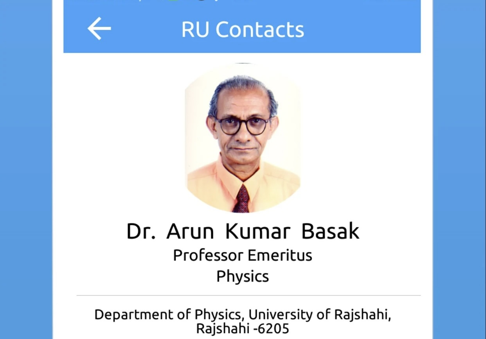
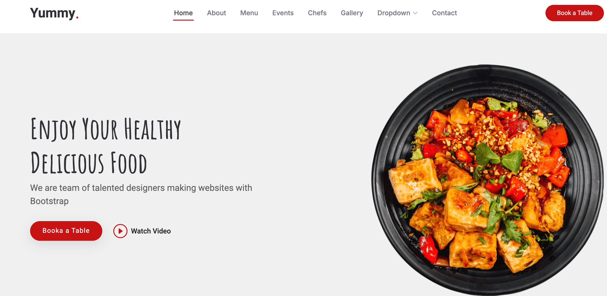

About
I am a graduate researcher and teaching assistant at Miami University, pursuing an M.S. in Computer Science (expected May 2026). My research focuses on accessibility technology, large language models, retrieval-augmented generation, and sensor fusion for autonomous systems. Before graduate school, I spent two years as a software engineer at Therap (BD) Ltd. and Samsung R&D Institute Bangladesh, building large-scale backend systems and embedded communication modules.
- Accessibility Technology & Assistive AI
- Large Language Models & RAG
- Camera–mmWave Sensor Fusion
- Human Activity Recognition & IoT
- Remote Sensing & GIS Urban Analysis
Publications
Projects






Experience
Click any card for full details
- Research in LLM & RAG, wheelchair accessibility, camera–mmWave sensor fusion, and autonomous driving
- Teaching assistant for undergraduate computer science courses
- Supported by Graduate Assistantship (full tuition) and Summer Research Fellowship 2025
I serve as a Graduate Teaching Assistant and active researcher in the Department of Computer Science and Software Engineering at Miami University. My work spans both applied research and academic instruction.
Research Projects
- MyPath (NIDILRR-funded): Building the backend routing engine for a wheelchair-accessible navigation app using Java Spring Boot and OpenStreetMap — computing barrier-aware routes for power wheelchair users in urban environments.
- OmniAcc (AAAI 2025): Contributed to a generative AI-powered accessibility assistant, including zero-shot crosswalk detection with GPT-4o achieving 97.5% accuracy.
- Camera–mmWave Sensor Fusion: Investigating fusion techniques for perception in autonomous driving scenarios.
- LLM & RAG: Exploring retrieval-augmented generation architectures for domain-specific knowledge access.
Teaching
- Teaching assistant for undergraduate CS courses including data structures, algorithms, and software engineering.
- Held regular office hours, graded assignments, and supported student projects.
Awards & Funding
- Graduate Assistantship — full tuition scholarship for the duration of the program.
- Summer Research Fellowship 2025.
- Faculty Learning Communities — AI & Student Project Development.
- Built push notification framework serving millions of users
- Achieved 80% efficiency improvement in Excel-based reporting solutions
- Led legacy codebase refactoring for improved maintainability
Therap Services is a US-based healthcare IT company providing electronic documentation solutions for agencies supporting people with intellectual and developmental disabilities. I joined as a Software Engineer and was promoted to Associate Software Engineer during my tenure.
Key Contributions
- Push Notification Framework: Designed and implemented a scalable push notification system serving millions of users across web and mobile platforms, significantly improving real-time communication within the application ecosystem.
- Excel Reporting Optimization: Refactored and optimized Excel-based reporting pipelines, achieving an 80% improvement in generation efficiency — reducing report generation time from minutes to seconds for large datasets.
- Legacy Code Refactoring: Led systematic refactoring of aging Java codebases, improving maintainability, reducing technical debt, and enabling faster feature development for the team.
- Backend Feature Development: Developed and maintained core backend features for the Therap platform using Java Spring Framework, Hibernate ORM, and Oracle SQL.
- Frontend Integration: Worked on JSP-based UI components and jQuery-driven interactions for the web application interface.
Tech Stack
- Developed communication modules for smart ring devices
Samsung R&D Institute Bangladesh (SRBD) is one of Samsung's global research and development centers. I joined as an Engineer I immediately after graduating, working on the mobile and wearable devices division.
Key Contributions
- Smart Ring Communication Module: Developed the Bluetooth communication layer for Samsung's smart ring wearable device prototype, enabling data exchange between the ring and companion Android applications.
- RTOS Integration: Worked with Real-Time Operating System (RTOS) firmware to implement low-latency sensor data collection and transmission protocols required by the wearable hardware.
- Android Companion App: Contributed to the Android-side companion app that interfaces with the smart ring over BLE, handling data parsing and device state management.
Tech Stack
Education
- Graduate Assistantship (full tuition scholarship)
- Summer Research Fellowship 2025
- Faculty Learning Communities — AI & Student Project Development
- Highest CGPA in class (2016–2017 session)
- Dean’s List — all four years
- 6th rank in ITEE FE Exam (IPA Japan)
- ACM ICPC member
Extra Curricular
Selected as a member of Miami University's Faculty Learning Communities (FLC) cohort focused on Artificial Intelligence and student-driven project development. The FLC brings together faculty and graduate students to collaboratively explore pedagogical approaches to AI integration in coursework and to mentor undergraduate students through research and project work.
Active member of the ACM International Collegiate Programming Contest (ICPC) community at the University of Rajshahi. Participated in programming contests involving algorithmic problem solving, data structures, and competitive coding under time constraints. Engaged with peers to practice and prepare for regional and national level contests.